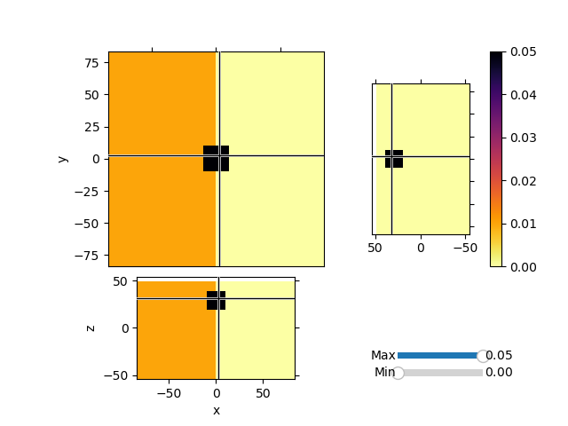
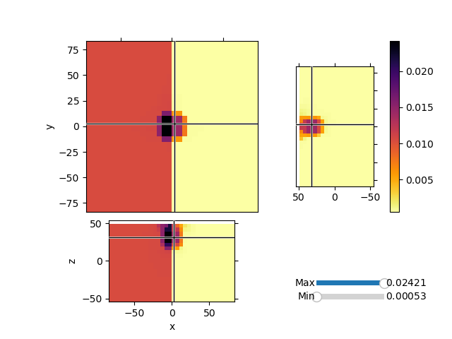

Note
Go to the end to download the full example code.
Maps: ComboMaps#
Invert synthetic magnetic data with variable background values and a single block anomaly buried at depth. We will use the Sum Map to invert for both the background values and an heterogeneous susceptibiilty model.
1


Running inversion with SimPEG v0.25.1
================================================= Projected GNCG =================================================
# beta phi_d phi_m f |proj(x-g)-x| LS iter_CG CG |Ax-b|/|b| CG |Ax-b| Comment
-----------------------------------------------------------------------------------------------------------------
0 5.80e+05 9.12e+06 4.27e-04 9.12e+06 0 inf inf
1 5.80e+05 1.35e+05 7.39e-02 1.78e+05 6.29e+01 0 3 8.09e-04 1.11e+06
2 2.90e+05 4.72e+04 2.31e-01 1.14e+05 3.51e+01 0 9 6.38e-04 2.77e+04
3 1.45e+05 2.03e+04 3.61e-01 7.26e+04 4.92e+01 0 10 4.68e-03 6.99e+03
4 7.25e+04 6.59e+03 4.76e-01 4.11e+04 5.48e+01 0 9 5.58e-04 5.65e+03
5 3.63e+04 4.72e+03 5.11e-01 2.33e+04 4.81e+01 1 10 8.40e-03 4.35e+03
6 1.81e+04 9.60e+02 6.04e-01 1.19e+04 3.54e+01 0 10 5.30e-04 5.38e+03
7 9.06e+03 9.48e+02 6.05e-01 6.43e+03 4.86e+01 4 10 1.22e+00 1.88e+05
8 4.53e+03 4.41e+02 6.50e-01 3.39e+03 5.26e+01 0 10 1.98e-02 2.21e+04
9 2.27e+03 4.41e+02 6.50e-01 1.91e+03 3.33e+01 6 10 2.08e-01 5.57e+04
10 1.13e+03 3.91e+02 6.69e-01 1.15e+03 3.49e+01 0 10 3.57e-01 1.37e+05
Reached starting chifact with l2-norm regularization: Start IRLS steps...
irls_threshold 0.010198923993009559
irls_threshold 0.012038778908749244
11 1.13e+03 3.92e+02 9.01e-01 1.41e+03 6.07e+01 6 10 1.36e-01 1.06e+05
12 1.13e+03 3.92e+02 9.57e-01 1.48e+03 6.09e+01 5 10 1.52e-01 1.26e+05
13 1.13e+03 4.35e+02 9.64e-01 1.53e+03 3.14e+01 0 10 2.72e-01 5.86e+04
14 1.13e+03 4.15e+02 1.00e+00 1.55e+03 3.67e+01 2 10 9.44e-03 2.17e+04
15 1.13e+03 4.15e+02 1.01e+00 1.56e+03 5.90e+01 10 10 4.19e-02 3.67e+04
16 1.13e+03 4.20e+02 9.93e-01 1.54e+03 5.91e+01 3 10 1.38e-01 1.22e+05
17 1.13e+03 4.12e+02 9.50e-01 1.49e+03 3.32e+01 0 10 4.67e-02 2.24e+04
18 1.13e+03 4.16e+02 9.37e-01 1.48e+03 3.15e+01 3 10 5.33e-01 1.37e+05
19 1.13e+03 4.25e+02 8.62e-01 1.40e+03 6.01e+01 0 10 1.10e-01 8.13e+04
20 1.13e+03 4.28e+02 8.33e-01 1.37e+03 2.90e+01 4 10 9.96e-01 7.89e+04
21 1.13e+03 4.38e+02 7.42e-01 1.28e+03 3.37e+01 0 10 4.27e-02 2.22e+04
22 1.13e+03 4.47e+02 7.25e-01 1.27e+03 5.17e+01 2 10 1.35e-01 1.68e+04
23 9.31e+02 4.51e+02 6.53e-01 1.06e+03 6.12e+01 0 10 2.67e-02 2.94e+04
24 7.62e+02 4.52e+02 6.04e-01 9.12e+02 3.68e+01 4 10 6.15e-03 9.72e+03
25 6.23e+02 4.45e+02 5.40e-01 7.81e+02 3.68e+01 1 10 8.01e-03 1.33e+04
26 5.14e+02 4.06e+02 5.01e-01 6.63e+02 6.17e+01 0 10 1.09e-02 1.66e+04
27 5.14e+02 4.07e+02 4.09e-01 6.17e+02 3.30e+01 2 10 9.45e+00 2.07e+05
28 5.14e+02 4.01e+02 3.50e-01 5.81e+02 3.63e+01 0 10 1.92e-01 1.29e+05
29 5.14e+02 4.05e+02 2.88e-01 5.53e+02 5.44e+01 1 10 6.84e-02 1.15e+04
30 5.14e+02 4.03e+02 2.42e-01 5.28e+02 6.22e+01 0 10 7.21e-03 6.85e+03
Reach maximum number of IRLS cycles: 20
------------------------- STOP! -------------------------
1 : |fc-fOld| = 8.3415e+00 <= tolF*(1+|f0|) = 9.1218e+05
1 : |xc-x_last| = 4.1853e-03 <= tolX*(1+|x0|) = 1.0075e-01
0 : |proj(x-g)-x| = 6.2165e+01 <= tolG = 1.0000e-03
0 : |proj(x-g)-x| = 6.2165e+01 <= 1e3*eps = 1.0000e-03
0 : maxIter = 100 <= iter = 30
------------------------- DONE! -------------------------
from discretize import TensorMesh
from discretize.utils import active_from_xyz
from simpeg import (
utils,
maps,
regularization,
data_misfit,
optimization,
inverse_problem,
directives,
inversion,
)
from simpeg.potential_fields import magnetics
import numpy as np
import matplotlib.pyplot as plt
def run(plotIt=True):
h0_amplitude, h0_inclination, h0_declination = (50000.0, 90.0, 0.0)
# Create a mesh
dx = 5.0
hxind = [(dx, 5, -1.3), (dx, 10), (dx, 5, 1.3)]
hyind = [(dx, 5, -1.3), (dx, 10), (dx, 5, 1.3)]
hzind = [(dx, 5, -1.3), (dx, 10)]
mesh = TensorMesh([hxind, hyind, hzind], "CCC")
# Lets create a simple Gaussian topo and set the active cells
[xx, yy] = np.meshgrid(mesh.nodes_x, mesh.nodes_y)
zz = -np.exp((xx**2 + yy**2) / 75**2) + mesh.nodes_z[-1]
# We would usually load a topofile
topo = np.c_[utils.mkvc(xx), utils.mkvc(yy), utils.mkvc(zz)]
# Go from topo to array of indices of active cells
actv = active_from_xyz(mesh, topo, "N")
nC = int(actv.sum())
# Create and array of observation points
xr = np.linspace(-20.0, 20.0, 20)
yr = np.linspace(-20.0, 20.0, 20)
X, Y = np.meshgrid(xr, yr)
# Move the observation points 5m above the topo
Z = -np.exp((X**2 + Y**2) / 75**2) + mesh.nodes_z[-1] + 5.0
# Create a MAGsurvey
rxLoc = np.c_[utils.mkvc(X.T), utils.mkvc(Y.T), utils.mkvc(Z.T)]
rxLoc = magnetics.Point(rxLoc)
srcField = magnetics.UniformBackgroundField(
receiver_list=[rxLoc],
amplitude=h0_amplitude,
inclination=h0_inclination,
declination=h0_declination,
)
survey = magnetics.Survey(srcField)
# We can now create a susceptibility model and generate data
model = np.zeros(mesh.nC)
# Change values in half the domain
model[mesh.gridCC[:, 0] < 0] = 0.01
# Add a block in half-space
model = utils.model_builder.add_block(
mesh.gridCC, model, np.r_[-10, -10, 20], np.r_[10, 10, 40], 0.05
)
model = utils.mkvc(model)
model = model[actv]
# Create active map to go from reduce set to full
actvMap = maps.InjectActiveCells(mesh, actv, np.nan)
# Create reduced identity map
idenMap = maps.IdentityMap(nP=nC)
# Create the forward model operator
prob = magnetics.Simulation3DIntegral(
mesh,
survey=survey,
chiMap=idenMap,
active_cells=actv,
store_sensitivities="forward_only",
)
# Compute linear forward operator and compute some data
data = prob.make_synthetic_data(
model, relative_error=0.0, noise_floor=1, add_noise=True
)
# Create a homogenous maps for the two domains
domains = [mesh.gridCC[actv, 0] < 0, mesh.gridCC[actv, 0] >= 0]
homogMap = maps.SurjectUnits(domains)
# Create a wire map for a second model space, voxel based
wires = maps.Wires(("homo", len(domains)), ("hetero", nC))
# Create Sum map
sumMap = maps.SumMap([homogMap * wires.homo, wires.hetero])
# Create the forward model operator
prob = magnetics.Simulation3DIntegral(
mesh, survey=survey, chiMap=sumMap, active_cells=actv, store_sensitivities="ram"
)
# Make sensitivity weighting
# Take the cell number out of the scaling.
# Want to keep high sens for large volumes
wr = (
prob.getJtJdiag(np.ones(sumMap.shape[1]))
/ np.r_[homogMap.P.T * mesh.cell_volumes[actv], mesh.cell_volumes[actv]] ** 2.0
)
# Scale the model spaces independently
wr[wires.homo.index] /= np.max((wires.homo * wr)) * utils.mkvc(
homogMap.P.sum(axis=0).flatten()
)
wr[wires.hetero.index] /= np.max(wires.hetero * wr)
wr = wr**0.5
## Create a regularization
# For the homogeneous model
regMesh = TensorMesh([len(domains)])
reg_m1 = regularization.Sparse(regMesh, mapping=wires.homo)
reg_m1.set_weights(weights=wires.homo * wr)
reg_m1.norms = [0, 2]
reg_m1.reference_model = np.zeros(sumMap.shape[1])
# Regularization for the voxel model
reg_m2 = regularization.Sparse(
mesh, active_cells=actv, mapping=wires.hetero, gradient_type="components"
)
reg_m2.set_weights(weights=wires.hetero * wr)
reg_m2.norms = [0, 0, 0, 0]
reg_m2.reference_model = np.zeros(sumMap.shape[1])
reg = reg_m1 + reg_m2
# Data misfit function
dmis = data_misfit.L2DataMisfit(simulation=prob, data=data)
# Add directives to the inversion
opt = optimization.ProjectedGNCG(
maxIter=100,
lower=0.0,
upper=1.0,
maxIterLS=20,
cg_maxiter=10,
cg_rtol=1e-3,
tolG=1e-3,
eps=1e-6,
)
invProb = inverse_problem.BaseInvProblem(dmis, reg, opt)
betaest = directives.BetaEstimate_ByEig(beta0_ratio=1e-2)
# Here is where the norms are applied
# Use pick a threshold parameter empirically based on the distribution of
# model parameters
IRLS = directives.UpdateIRLS(f_min_change=1e-3)
update_Jacobi = directives.UpdatePreconditioner()
inv = inversion.BaseInversion(invProb, directiveList=[IRLS, betaest, update_Jacobi])
# Run the inversion
m0 = np.ones(sumMap.shape[1]) * 1e-4 # Starting model
prob.model = m0
mrecSum = inv.run(m0)
if plotIt:
mesh.plot_3d_slicer(
actvMap * model,
aspect="equal",
zslice=30,
pcolor_opts={"cmap": "inferno_r"},
transparent="slider",
)
mesh.plot_3d_slicer(
actvMap * sumMap * mrecSum,
aspect="equal",
zslice=30,
pcolor_opts={"cmap": "inferno_r"},
transparent="slider",
)
if __name__ == "__main__":
run()
plt.show()
Total running time of the script: (0 minutes 23.423 seconds)
Estimated memory usage: 342 MB